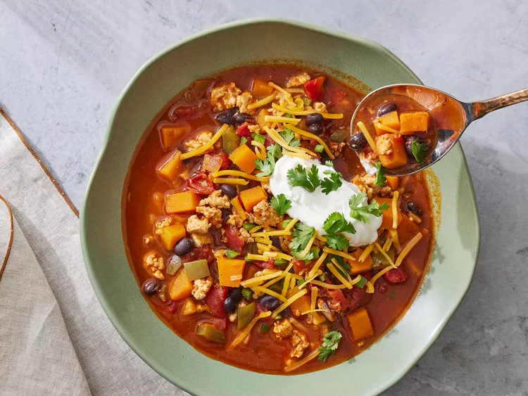

Butternut Squash Chili

Description
If you love chili, add this butternut squash chili to your repertoire. It feels like fall, and has great flavor without being too spicy. It's also a great way to add squash to your menu.
Ingredients
Chili
- 2 tablespoons olive oil
- 1 cup chopped yellow onion
- 2 tablespoons tomato paste
- 4 cloves garlic, minced
- 2 cups vegetable broth
- 1 cup chopped green bell pepper
- 2 cups butternut squash, cut into 1/2-inch cubes
- 1 (14 1/2 ounce) can diced tomatoes
- 1 (14 1/2 ounce) can fire roasted diced tomatoes
- 1 tablespoon brown sugar
- 1 tablespoon chili powder
- 2 teaspoons ground cumin
- 1/2 teaspoon crushed red pepper (optional)
- 1 (15- to 16-ounce) can black beans, rinsed and drained
- 1 pound cooked ground turkey or chicken (optional)
- 1 teaspoon salt
- 1/2 teaspoon freshly ground black pepper
Toppings
- 3/4 cup shredded Cheddar cheese
- 1/3 cup sour cream
- 6 tablespoons chopped cilantro
- 1 jalapeno, seeded and finely chopped
- 1 avocado - pitted, peeled, and diced
Steps
- Cook the onion and tomato paste in oil, then stir in the garlic.
- Add the broth, bell pepper, squash, and tomatoes. Stir in the sugar, chili powder, cumin, and red pepper flakes. Simmer until the squash is tender.
- Add beans and ground meat (if using). Cover and simmer, then season.
- Top with your desired toppings.